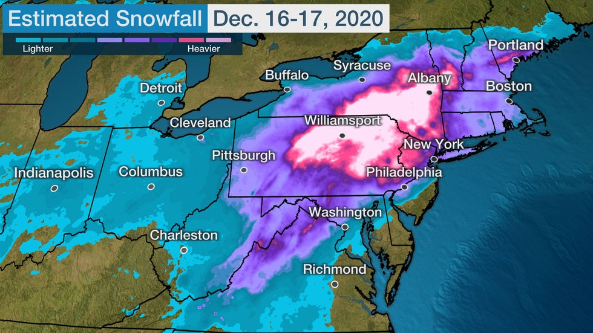

WRF Test Case Study: Major Snowstorm December 16-17, 2020#

Detailed workflow here
Summary workflow here
WPS: Model Domain Initialize#
Generate grid information
Note
Everytime edit is used in a command it implies you will use your chosen editing method. This could be via ‘jupyterhub or terminal-based editor such as emacs
In WPS directory. Edit namelist.wps
cd ../WPS
edit namelist.wps
Change the following lines only to the values shown (mostly getting rid of 2nd number and a , at end of each line).
This locates the domain over the -79W,41E. Approximately the center of action for the storm. With a resolution of 15 km in latitude and longitude (this could be changed as a sensitvity study later).
&share
wrf_core = 'ARW',
max_dom = 1,
start_date = '2020-12-15_00:00:00',
end_date = '2020-12-17_18:00:00',
interval_seconds = 10800
/
&geogrid
parent_id = 1,
parent_grid_ratio = 1,
i_parent_start = 1,
j_parent_start = 1,
e_we = 100,
e_sn = 80,
geog_data_res = 'default',
dx = 15000,
dy = 15000,
map_proj = 'lambert',
ref_lat = 41.00,
ref_lon = -76.00,
truelat1 = 30.0,
truelat2 = 60.0,
stand_lon = -79.0,
geog_data_path = '/glade/work/wrfhelp/WPS_GEOG/'
/
Plot domain grid (requires a simple ncl command and a module load if not currently installed))
First you will need to edit the ncl file to get the right output tyoe .png to be easily viewd in jupyterhub
edit util/plotgrids_new.ncl (and set `type = "png"`)
Now run grid domain image code
ncl < util/plotgrids_new.ncl
View created image file wps_show_dom.png in jupyterhub
Generate surface data for this domain (takes a few minutes)
./geogrid.exe
Successful if last line on screen is
! Successful completion of geogrid. !
Check generated grid data Data should be in
geo_em.d01.nc(check it exists) Browse data (should for the most part be obviously North East USA)
ncview geo_em.d01.nc
Variable descriptions very limited. Try ncdump to look at the descriptions for each variable.
ncdump -h geo_em.d01.nc | less
Grab domain datasets for this case study (Run WPS)
Raw grib files (GFS) used to initialize WRF forecasts can be found here. If a different time period is needed then additional data has to be processed.
Note
Data needed to run this case study can be found here:
/glade/scratch/rneale/GFS/
With the changes to namelist.wps run WPS to set up processing of meteorology fields for initial and boundary forcing
./link_grib.csh /glade/scratch/rneale/GFS/asp1/
Then link to the correct Vtable (GFS, for this case):
ln -sf ungrib/Variable_Tables/Vtable.GFS Vtable
Then run the ungrib executable. Ungrib translates the raw GRIB files from GFS so tha metgrid can perform required interpolation to the model domain (takes a few minutes)
Warning
Using bash shell here may lead to problems. Try switching to csh if that’s the case.
./ungrib.exe
The extensive output from running this command details the available data variables and levels used for interpolation. Look for:
! Successful completion of ungrib. !
ungrib produces a number of local files e.g. FILE:2020-12-15_00 which are prestaged for WRF to be run.
Warning
If you are to rerun this step you must delete all the FILE:* files first
Finally for data preparation for WRF is interpolation performed in metgrid (takes about a minute).
./metgrid.exe >& log.metgrid
Running the model
Change to WRF directory from WPS directory
cd ../WRF
Let’s run the case here
cd test/em_real (we can also run it here: run/)
And similar to linking the files we generated with WPS do the following
ln -sf ../../WPS/met_em.d01.2020-12* .
or
ln -sf ../../../WPS/met_em.d01.2020-12* .
Look over namelist, make sure it reflects the period of the
edit namelist.input
We are only using the first column of values as we only have a single domain and no nesting. Make sure you change:
Turn off second domain
input_from_file=.true.,.false.Dates of forecast should be
'2020-12-15_00:00:00' to '2020-12-17_18:00:00'Length of forecast should be
run_hours = 60Domain range:
e_we=100ande_sn=80Gravity wave drag option to
gwd_opt=0instead
You can now run the real program, which processes data for a real case study, on a compute node
qcmd -- ./real.exe
RUN WRF (on a compute node, with a little more time to complete - 2 hours) !
qcmd -l walltime=2:00:00 -- ./wrf.exe
You will find all the output from the run in this directory
cd ../test/em_real/
You should see hourly wrfout files as the model runs from 2020-12-15:00Z through 2020-12-17:18Z similar to
wrfout_d01_2020-12-15_00:00:00
A total of 60 hours
When run on a compute node the simulation hopefully takes around 45 minutes to complete
Simple analysis of the output
It will be helpful to make a concatonated file of teh output for easy vieing using ncrcat
ncrcat wrfout_d01_2020-12-1* wrfout_d01_2020.nc
Then if you ssh -XY $USER@cheyenne.ucar.edu it is easy to use panoply or ncview to ‘quick-look’ the data
panoply wrfout_d01_2020.nc
ncview wrfout_d01_2020.nc
This can also be done locally on your laptop by using sftp to bring your data from cheyenne
OK let’s take a look inside these with one of the jupyter notebooks.
Make a new diagnostics directory
mkdir /glade/work/$USER/ASP2023/diags
Copy across the set of notebooks for simple analysis
cp /glade/work/rneale/ASP2023/diags/* /glade/work/$USER/ASP2023/diags